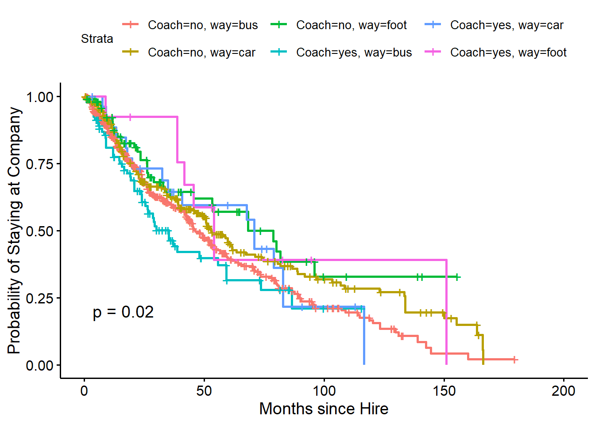

Employees choose to leave organizations for many reasons. Thus, it is sometimes important for Human Resources and People Analytic departments to identify variables that may influence the likelihood that employees will turnover.
About This Data
Using this real employee dataset shared by Edward Babushkin and housed on Kaggle, I will analyze several factors that influence the likelihood that an employee will leave their company. Also, a big thank you to Keith McNulty, Alex LoPilato, and Liz Romero for their people analytics course on github.
Data columns:
stag = job tenure (time in months)
event = employee turnover event
gender = employee’s gender
age = employee’s age
industry = employee’s industry
profession = employee’s profession
traffic = from what pipeline an employee came to the company
coach = presence of training coach
head_gender = supervisor gender
greywage = wage type (taxed or not)
way = employee’s mode of transportation
extraversion = extraversion score
independ = agreeableness score
selfcontrol = conscientiousness score
anxiety = neuroticism score
novator = openness score
First, I will load in the data and make any necessary corrections.
Since each data point represents an employee who has either left the organization or is currently employed, and there are no missing data points, I will move on to model building and running some analyses on the data.
Survival Analysis
First, I conducted a survival analysis and related the survival object to several of the variables that were measured during the employee on-boarding period.
library(survival)library(survminer)library(lubridate)library(ggfortify)# Create a censor indicator variable that is 1 if the employee has left and 0 otherwiseTurnData <- TurnData %>% dplyr::mutate(CENSOR = dplyr::case_when( event =="no"~0,TRUE~1))# Create a survival objectsurv_object <- survival::Surv(event = TurnData$CENSOR,time = TurnData$stag)# Estimate survival probabilities using Kaplan Meier estimatorSurvProb <- survival::survfit( surv_object ~1,data = TurnData)head(fortify(SurvProb),10)
FYI: To reduce the length of the printed data, I only asked for the first 10 rows but a row is created until the “surv” column reaches zero so this output can become quite long.
The first item I notice from this output is that turnover occurs at a relatively rapid rate at this company (this interpretation may slightly change if the organization is a massive company - total N size is not accessable). Since the time metric is in months, by the first year, approximately 297 employees (1129 - 832) are predicted to turnover, for a survival percentage of about 85%. Additionally, I would expect only half of the employees to remain at the company about 4 years into the job (approximately 50 months).
I also determined that 571 employees turned over at this company and there are 558 censored observations. These censored observations are participants who have not yet experienced the event of interest in this dataset: turnover. Also, the first censored participant showed up at time point three (about 2 weeks).
Now I will visualize the Kaplan Meier estimator output.
survminer::ggsurvplot( SurvProb,pval =TRUE,conf.int =TRUE,risk.table =TRUE,xlab ="Months since Hire",ylab ="Probability of Staying at Company")
Considering no other explanatory variables, results of my survival analysis predicts that most employees will turnover about 175 months (14.5 years) into their tenure at the company. However, perhaps additional variables, such a the presence of a coach and commuting style better explain the tenure trajectory of employees at this company.
SurvProb_Coach <- survival::survfit(surv_object ~ Coach, data = TurnData)head(fortify(SurvProb_Coach), 10)
At a quick glance, it appears that the presence of a coach speeds up the attrition rate at this company! Perhaps the company should investigate the coaches they have employed to work with their staff as employees have a lower survival rate when paired with a coach than those who do not have a coach. However, I want a statistical test to tell the difference between these two survival curves. I will now visualize these survival rates and ask for a test of the difference in survival curves.
survminer::ggsurvplot( SurvProb_Coach,pval =TRUE,conf.int =TRUE,xlab ="Months since Hire",ylab ="Probability of Staying at Company")
As is made more clear by this graph, the survival curves for those who had and did not have a coach did not significantly differ from each other, log-likelihood p = .27. I am also curious how commuting style (if the employee commuted by way of a bus, car, or by foot) impacted attrition and if commuting style interacted with coaching. First, I will change my model to include commuting style and will plot the model.
SurvProb_Way <- survival::survfit(surv_object ~ way, data = TurnData)#summary(SurvProb_Sup)survminer::ggsurvplot( SurvProb_Way,pval =TRUE,conf.int =TRUE,xlab ="Months since Hire",ylab ="Probability of Staying at Company")
Results indicate that commuting style did significantly change the attrition estimate for employees. Since there are more than two curves, this only tells me that at least one of the curves differs from the others, but not which curves those are. I will come back to this issue in a moment.
Now I want to see how the occurrence of coaching potentially interacts with commuting style in predicting attrition rates.
IntModel <- survival::survfit(surv_object ~ Coach + way, data = TurnData)survminer::ggsurvplot(IntModel, pval =TRUE,xlab ="Months since Hire",ylab ="Probability of Staying at Company")

Note here the significant log-likelihood p value. I also removed the shading for confidence intervals to aid in readability. To really understand the group differences in survivability, the Cox-Proportional Hazards Model, a semi-parametric regression model, will be utilized. I also decided to add in participant’s conscientiousness scores to the model.
Results indicate that coaching style did not significantly interact with commuting type, all ps>.05, nor was there any group difference for participants who had a coach vs. those who did not, b = 0.20, p = .19. However, the difference between riding the bus to work and commuting by either car, b = -0.22, p = .03, or by foot, b = -0.43, p = .02, were significant and negative. This suggests that when compared to riding the bus, driving to work reduces the hazard (of attrition) by a factor of .80 and walking to work reduces the hazard by .65. Self-control was also a significant predictor, such that every unit increase in conscientiousness reduces the hazard by a factor of .94.
It is my recommendation that the company evaluates the utility of their coaching program, as employees are no less likely to leave the company when they have a coach, compared to those who do not have coaches. Conscientious and commuting style stand out as significant predictors of the survival curves. Thus, it may be advantageous to the company to consider adding conscientiousness personality tests to their selection battery (when it makes sense with established job analyses), as more conscientious employees left the company at slower rates. Also, the company may want to encourage carpooling and reduce barriers to walking to work (e.g., keeping sidewalks clean; providing flexible start times so that employees have ample time to walk to work where applicable; etc.).